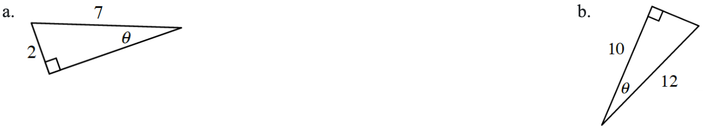

.figure-full image option. Homework Help text omitted. Figure filenames now use hyphens. Code comments included for easier editing.Sketch a graph of the unit circle with the angles specified below.
\(\frac { \pi } { 6 }\)
\(\frac{3\pi}{4}\)
\(\frac{5\pi}{3}\)
Given \(f\left(x\right)=\sqrt[3]{x}+2\).
Write an equation for \(f^{-1}\).
Sketch \(y=f(x)\) and \(y=f^{-1}(x)\) on the same set of axes.
What are \(f^{-1}(f(6))\) and \(f(f^{-1}(2))\)? What do you notice?
Rewrite \(y=3x-2\) in point-slope form. How did you decide which point to use?
Solve for \(θ\) in each triangle below.
Right triangle labeled as follows: Short leg, 2, hypotenuse, 7, angle opposite short leg, theta.
Right triangle labeled as follows: Long leg, 10, hypotenuse, 12, angle opposite short leg, theta.

Sketch the graph of \(f ( x ) = \left\{ \begin{array} { c c c } { 2 x } & { \text { if } x < 3 } \\ { 10 - x } & { \text { if } x \geq 3 } \end{array} \right.\).
Factor each expression.
\(x^2+8x-9\)
\(6x^2+48x-54\)
Allison drove for a total of \(2\) hours. She drove \(50\) mph for the first \(90\) minutes and then drove \(75\) mph for the last \(30\) minutes.
How far did she travel?
Sketch a graph of this information using velocity in miles per hour and time in hours. Shade the area in the first quadrant that is under the graph. Describe the shape(s) of the shaded region.
What is the area of the shaded region?
What units are used for the area? Use the units for the height and base of the rectangles to justify your answer.